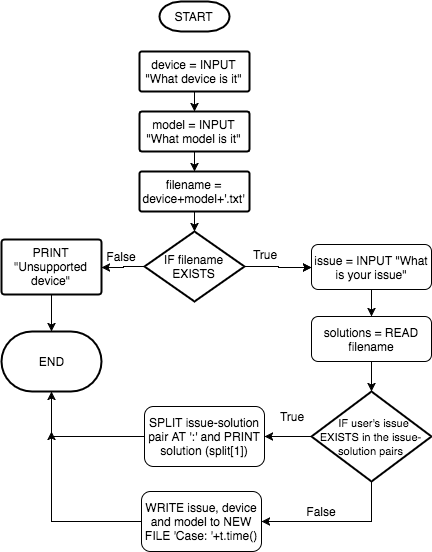

Analyse the requirements for this system and design, develop, test and evaluate a program to provide troubleshooting advice for several devices. The system should identify the device and load a file of suitable questions and responses for that device. You will need to create two files to test the system, for third or subsequent devices it is acceptable to show that they have been recognised with a simple acknowledgement. This is a demonstration version of the system and need not deal with all potential problems.
So, I need to develop a program where in which the user can first tell the program what device and model they are having
issues with so that the program can load a different set of suitable question-answer pairs based on their device.
This program needs to incorporate a mechanism that transforms the user's input about their device into a concatendated filename.
For example: if the user types 'iphone' for the device, and typed '5s' for the model, the program will load iphone5s.txt
I'll also need to write logic that will create a file with their device information and issue as well as assign them a case number for
a support agent to access at a later date.
The first question I need to ask myself is what components of my programming knowledge am I going to have to use to develop this
program. I wrote a short list in my notebook in real life, here's what i wrote:
For my planning I've made a flowchart and also written some basic outline pseudocode to help display and demonstrate how my program will
function and what basic logic it will follow.
Here's my flowchart:

And here's my pseudocode:
device = input('What device are you having issues with?') -> to lowercase
model = sysinp('What model is it?') -> to lowercase
filename = device + model + '.txt'
if exists(filename) then
issue = input('What is your issue?') -> to lowercase
with open(filename,'r') as solutions do
for solution in solutions do
if issue in solution then
finalSolution = solution -> split(':')[1] -> rstrip()
print('Solution: '+finalSolution)
exit()
else then
continue
print('Sorry but we do not have a solution for you. We will log your issue with a case number for our agents to look at.')
case_number = t.time() -> int() -> str()
case = open('case-'+case_number+'.txt', 'w+')
case.write('Case number: '+case_number+'\n\n')
case.write('Device: '+device+'\n')
case.write('Model: '+model+'\n\n')
case.write('Issue: '+issue)
print('An agent will get back to you. Your case number is: '+case_number)
exit()
else then
print('Sorry, we do not support this device!')
exit()
Here's my commented end code:
https://gist.github.com/iJamesPHP/cd560e7f236f5e55202a8bbb49d3214c
In this section I'll describe the different aspects of my program, how they work and why I've chosen to do it that way.
sysp(), I use this function instead of the print() function so that I can always
add the same prefix to all my outputs and structure them nicely.
sysinp(), this function is to add the same prefix as sysp() to input messages.
check_blank() that goes inside the sysinp() function to catch illegal blank inputs and alert the user then exit
the program.
| Feature | Scenario | Data Used | Expected Outcome | Actual Outcome | Evaluation |
|---|---|---|---|---|---|
| Handling illegal input | A user's input is blank | Typing '' as the device name | To be told it's an illegal input and the program will exit | I was told it was an illegal input and the program exited | This feature is working in my program |
| Offer tailored solutions based on the user's device | A user's iPhone 5S' touchid isn't working | Typing 'iphone' as the device, '5s' as the model and 'touchid isnt working' as the issue | To be told the solution is to try a hard reset and then the program will exit | I was told the solution was to try a hard reset and then the program exited | This feature is working in my program, the lines are being looped over to search for the correct solution for the user's issue for that device |
| Always giving a solution | Having an unsolvable issue | Typing 'iphone' as the device, '5c' as the model and 'i dont know how to describe it' as the issue | To be told there is no solution and that their issue and device information have been logged in a file with a case number | I was told there is no solution and my issue and device information had been logged to a .txt file with an attatched case number | This feature is working in my program |